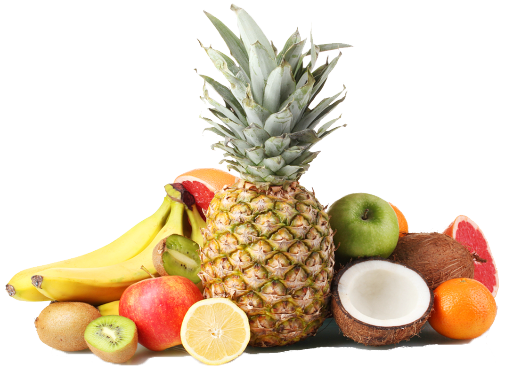

<!DOCTYPE html>
<html lang="en">

<head>

    <meta charset="utf-8">
    <meta http-equiv="X-UA-Compatible" content="IE=edge">
    <meta name="viewport" content="width=device-width, initial-scale=1">
    <meta name="description" content="">
    <meta name="author" content="">

    <title>Modern Business - Start Bootstrap Template</title>

    <!-- Bootstrap Core CSS -->
    <link href="css/bootstrap.min.css" rel="stylesheet">

    <!-- Custom CSS -->
    <link href="css/modern-business.css" rel="stylesheet">

    <!-- Custom Fonts -->
    <link href="font-awesome/css/font-awesome.min.css" rel="stylesheet" type="text/css">

    <!-- HTML5 Shim and Respond.js IE8 support of HTML5 elements and media queries -->
    <!-- WARNING: Respond.js doesn't work if you view the page via file:// -->
    <!--[if lt IE 9]>
        <script src="https://oss.maxcdn.com/libs/html5shiv/3.7.0/html5shiv.js"></script>
        <script src="https://oss.maxcdn.com/libs/respond.js/1.4.2/respond.min.js"></script>
    <![endif]-->

</head>

<body>

    <!-- Navigation -->
    <nav class="navbar navCustom navbar-fixed-top" role="navigation">
        <div class="container">
            <!-- Brand and toggle get grouped for better mobile display -->
            <div class="navbar-header">
                <button type="button" class="navbar-toggle" data-toggle="collapse" data-target="#bs-example-navbar-collapse-1">
                    <span class="sr-only">Toggle navigation</span>
                    <span class="icon-bar"></span>
                    <span class="icon-bar"></span>
                    <span class="icon-bar"></span>
                </button>
            </div>
            <!-- Collect the nav links, forms, and other content for toggling -->
            <div class="collapse navbar-collapse" id="bs-example-navbar-collapse-1">
                <ul class="nav navbar-nav">
                    <li>
                        <a href="distributors.html">DISTRIBUTORS</a>
                    </li>
                    <li>
                        <a href="buy.html">WHERE TO BUY</a>
                    </li>
                    <li>
                        <a href="products.html">PRODUCTS</a>
                    </li>
                    <li class="dropdown">
                        <a href="#" class="dropdown-toggle" data-toggle="dropdown">OUR STORY</a>
                        <ul class="dropdown-menu">
                            <li>
                                <a href="history.html">HISTORY</a>
                            </li>
                            <li>
                                <a href="ingredients.html">AUTHENTIC INGREDIENTS</a>
                            </li>
                        </ul>
                    </li>
                    <li>
                        <a href="contact.html">GET IN TOUCH</a>
                    </li>
                </ul>
            </div>
            <!-- /.navbar-collapse -->
        </div>
        <!-- /.container -->
    </nav>

    <!-- Header Carousel -->
    <header id="myCarousel" class="carousel slide">

        <!-- Wrapper for slides -->
        <div class="carousel-inner">
            <div class="item active">
                <div class="fill" style="background-image:url('img/background-blue.jpg');">
                    
                </div>
                <div class="carousel-caption captionPage1">
                    <div class="text-left">
                        <h1>
                            Only the <span style="color: yellow;"> purest</span>
                            <br>
                            & <span style="color: yellow;"> best</span> will do.
                        </h1>
                    </div>
                </div>
            </div>
        </div>
    </header>

    <!-- Page Content -->
    <div class="container">
        <div class="row text-center homeRow">
            <div class="col-sm-3"></div>
            <div class="col-sm-6 text-left">
                <p>
                    Helados Mexico frozen delights begin in sun-drenched fields. Our fresh fruits and real flavorings are harvested 
at the prime of ripeness and rushed to the Tropicale facility in Chino, California daily.
                </p>
                <p>
                    Our fruit is always prepared by hand — carefully cleaned and lovingly sliced, squeezed or chopped to preserve flavor and natural goodness. There’s just no substitute for hand preparation.
                </p>
                <p>
                    At Tropicale, we only use real milks and creams. And they’re never air-whipped for mass production 
like other paleta pretenders. That’s because only gentle blending can deliver the traditional 
velvety texture and unmatched taste of Helados products.
                </p>
            </div>
            <div class="col-sm-3"></div>
        </div>
      
 

    </div>
    <!-- /.container -->

    <!-- jQuery -->
    <script src="js/jquery.js"></script>

    <!-- Bootstrap Core JavaScript -->
    <script src="js/bootstrap.min.js"></script>


</body>

</html>
